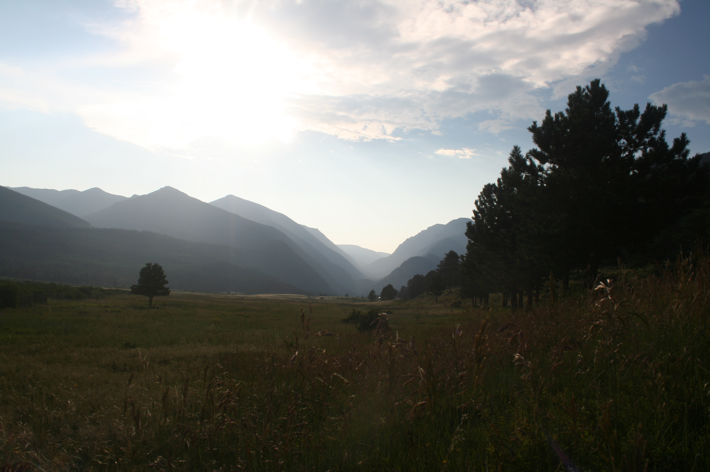

MARION MOUNTAIN
Idyllwild-Pine Cove, CA, USA, July 27, 2021

During times of relaxation, there is a tendency towards reflecting on life and wants. During this particular trip, my decision to pursue both my creative outlook and my mathematically-centered mind solidified. With limited internet connectivity, I obtained an electronic copy of DSLR Photography for Beginners by Stacey Hersh. The views from Marion Mountain were stunning and perfect for practice while also working through Python Crash Course, 2nd Edition by Eric Matthes.
ROCKY MOUNTAIN NATIONAL PARK
Near Estes Park, CO, USA, Sep 12, 2021

While there was little time to open my laptop, much less practice Python, I spent the few days I was able to venture into the Rockies fully allowing myself to be immersed in the beauty.